互動式法學簡報
混合分割之法律效力分析
民法第 824 條第 2 項第 2 款後段｜實務見解分歧與法院裁量
謝秉錡律師
黃暐筑律師
2026 年 5 月
一、法律爭點與法規架構
【事實摘要】
甲、乙、丙三人共有 A 土地。甲在 A 土地後方建有房屋，A 土地上有一小路通往甲之房屋。
乙向法院提起共有物分割訴訟。甲主張：將 A 土地分割為二部分，(1) 小路部分由原物分配予甲；(2) 其餘土地變價分割，價金分配予各共有人。
【核心爭點】
1. 「部分原物、部分變價」之混合分割方法是否合法？
2. 供通行使用之小路，得否單獨分配予甲一人？
3. 其餘部分採變價分割，是否具備「原物分配顯有困難」之要件？
共有物分割法律效力分析 ｜ 謝秉錡律師事務所 第 2 頁／共 20 頁
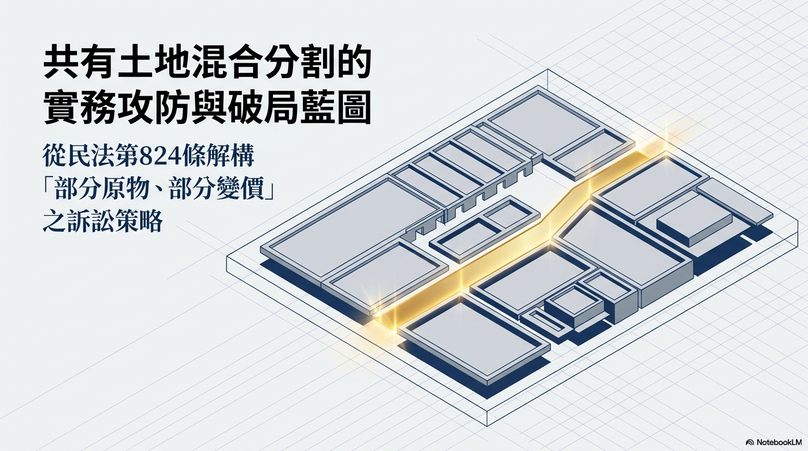
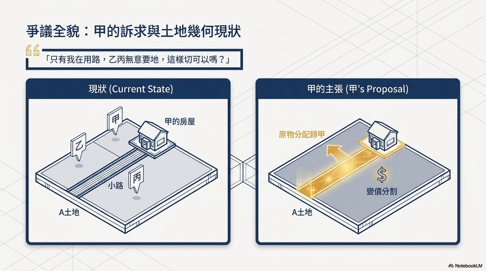
民法第 823～825 條
【民法第 824 條第 2 項第 2 款】
以原物為分配時，因共有人之利益或其他必要情形，得就共有物之一部分仍維持共有。
【同上第 2 項第 2 款後段】
「以原物之一部分分配於各共有人，他部分變賣，以價金分配於各共有人。」
【民法第 824 條第 3 項】
共有人中有未受分配，或不能按其應有部分受分配者，得以金錢補償之。
【民法第 823 條第 1 項】
各共有人，除法令另有規定外，得隨時請求分割共有物。但因物之使用目的不能分割或契約訂有不分割之期限者，不在此限。
【司法實務核心爭點】
「各共有人」是否限於「全體共有人」？
→ 早期嚴格說：必須全體共有人均受原物分配（否定說）
→ 現行彈性說：得僅由部分共有人受原物分配（肯定說）
共有物分割法律效力分析 ｜ 謝秉錡律師事務所 第 3 頁／共 20 頁
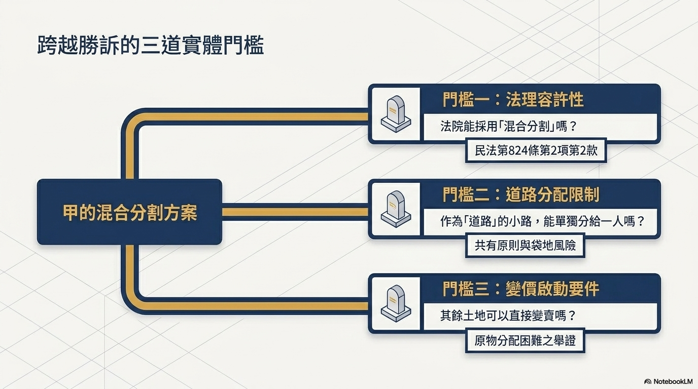
105 年法律座談會．甲說
【見解要旨】
嚴格文義解釋：民法第 824 條第 2 項第 2 款後段所稱「各共有人」，係指「全體共有人」。
因此，法院採混合分割（部分原物＋部分變價）時，原物部分應分配予「全體共有人」，不得僅分配予部分共有人。
【代表性見解】
• 臺灣高等法院暨所屬法院 105 年法律座談會民事類提案第 11 號
表決結果：甲說（否定說）34 票 ＞ 乙說（肯定說）33 票
多數意見認為：僅將部分土地分配予部分共有人，與法條「分配於各共有人」之文義不符。
• 108 年度上字第 1258 號判決
明確採否定說：「不能採用將系爭土地之部分分割予部分共有人，再將其餘土地部分變價後分配予其他未取得土地之人。」
共有物分割法律效力分析 ｜ 謝秉錡律師事務所 第 4 頁／共 20 頁
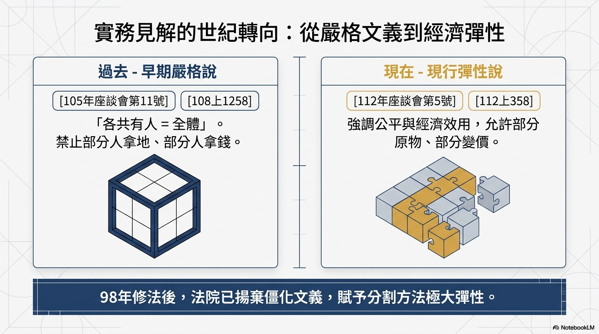
112 年法律座談會．乙說
【見解要旨】
98 年民法修正後，法院應以「公平原則」及「經濟效用」為核心考量，允許彈性運用分割方法。
「
部分原物分配予部分共有人、其餘變價分配」之混合分割，現已為實務肯定
。
【代表性見解】
• 臺灣高等法院暨所屬法院 112 年法律座談會民事類提案第 5 號
研討結果：採乙說（肯定說）
「法院可依個案情形，採原物與變價分割併用，並由取得原物者補償未取得者，此為修法後允許之方法，符合立法意旨與公平原則。」
• 關鍵轉折：法院強調「由取得原物者補償未取得者」（民法第 824 條第 3 項），使混合分割具備公平性。
共有物分割法律效力分析 ｜ 謝秉錡律師事務所 第 5 頁／共 20 頁
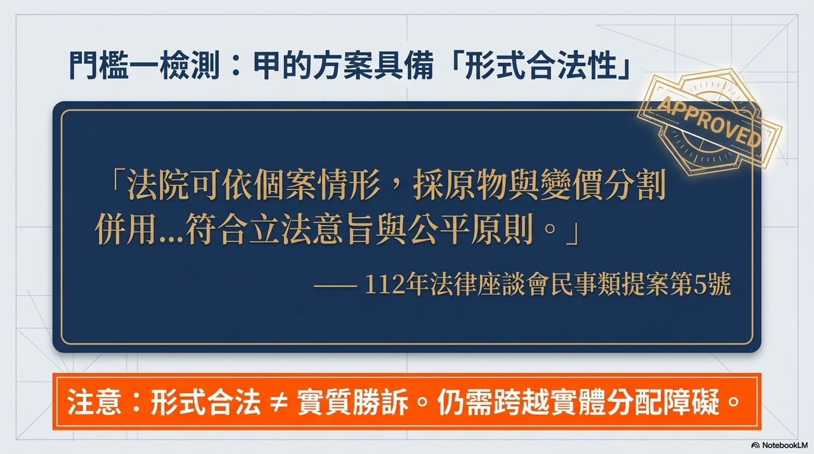
實務見解之演變
❌ 嚴格解釋（早期）
• 法條文義：「各共有人」＝全體共有人
• 混合分割時，原物必須分配予全體共有人
• 僅分配部分共有人 → 違反法條文義
• 代表性見解：
－105 年座談會甲說（34 票）
－108 年度上字第 1258 號
• 評價：過度拘泥文義，未能兼顧經濟效用
✅ 彈性解釋（現行）
• 98 年修法意旨：公平原則＋經濟效用
• 混合分割：得僅由部分共有人取得原物
• 配套：取得原物者以金錢補償其他共有人
• 代表性見解：
－112 年座談會乙說（多數採用）
－臺灣高等法院 112 年提案第 5 號
• 評價：符合現代共有物分割之實務需求
共有物分割法律效力分析 ｜ 謝秉錡律師事務所 第 6 頁／共 20 頁
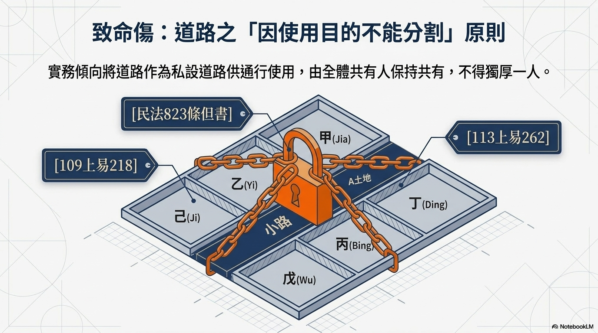
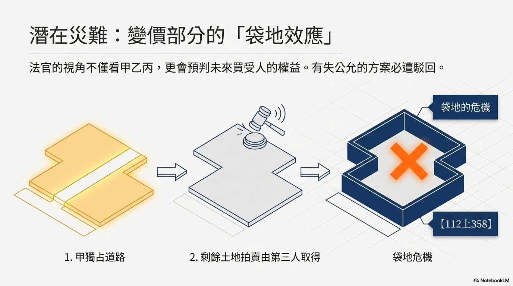
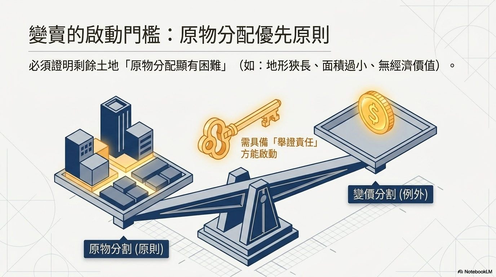
因使用目的不能分割原則
【民法第 823 條第 1 項但書】
「因物之使用目的不能分割」者，不得請求分割。
【實務見解：道路原則上應維持共有】
• 108 年度上字第 1258 號判決：
「所謂因物之使用目的不能分割，係指共有物繼續供他物之用，而為其物之利用所不可缺……例如……區分所有建築物之共同部分等是。」
• 112 年度上字第 358 號判決：
「屬道路用地之……部分，依其使用目的即有維持共有之必要，當由兩造共同負擔道路用地之面積，應屬允妥。」
【法律效果】
供通行使用之道路土地，法院依民法第 824 條第 4 項，通常會判決「維持共有」，由全體共有人按應有部分比例共有。
共有物分割法律效力分析 ｜ 謝秉錡律師事務所 第 7 頁／共 20 頁
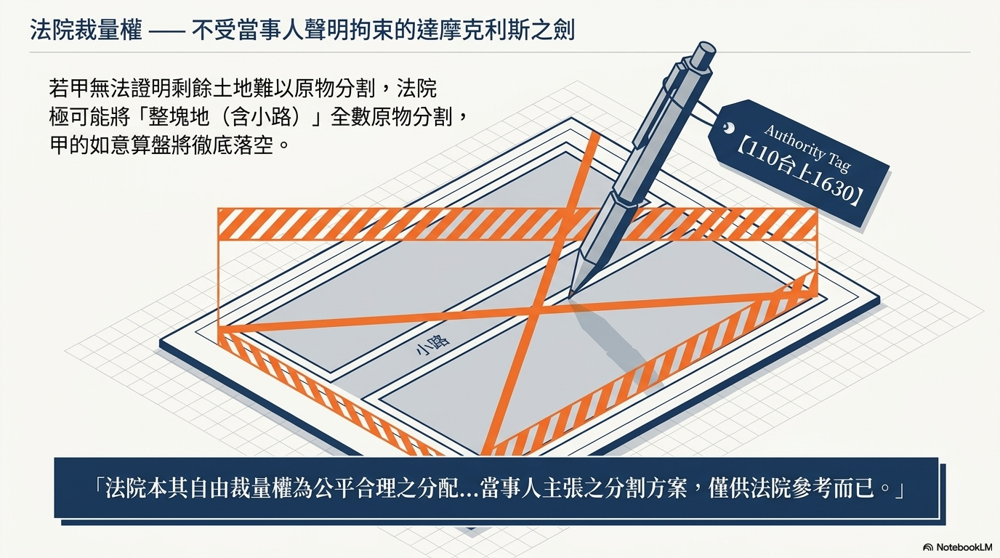
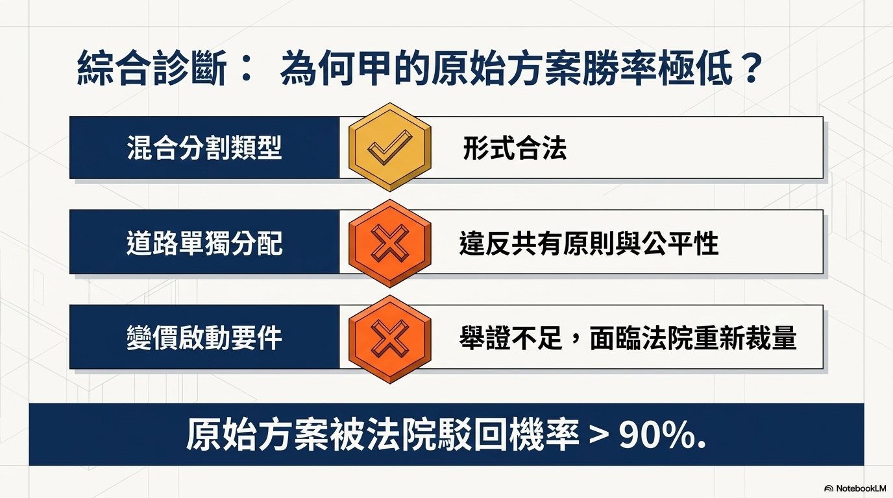
「原物分配顯有困難」之判斷
【法條依據】
民法第 824 條第 2 項第 2 款前段：「原物分配顯有困難時，得變賣共有物，以價金分配於各共有人。」
【「顯有困難」之認定標準】
實務上包括：
• 地形狹長、難以單獨利用
• 面積過小，不符合經濟效益
• 共有土地為「道路用地」，無單獨利用價值 → 112 年度上易字第 472 號
【實務態度：審慎採用變價分割】
• 112 年度上字第 358 號：
「難認兩造就系爭土地受原物之分配顯有事實上或法律上之困難……應認以由原物分割方法為適當。故……主張採變價分割方案，委無可採。」
【舉證責任】甲須舉證證明「其餘部分」確有原物分配之困難，否則法院將優先採原物分割。
共有物分割法律效力分析 ｜ 謝秉錡律師事務所 第 9 頁／共 20 頁
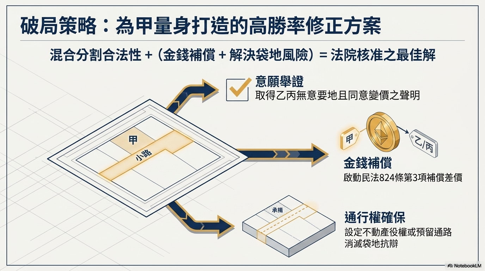
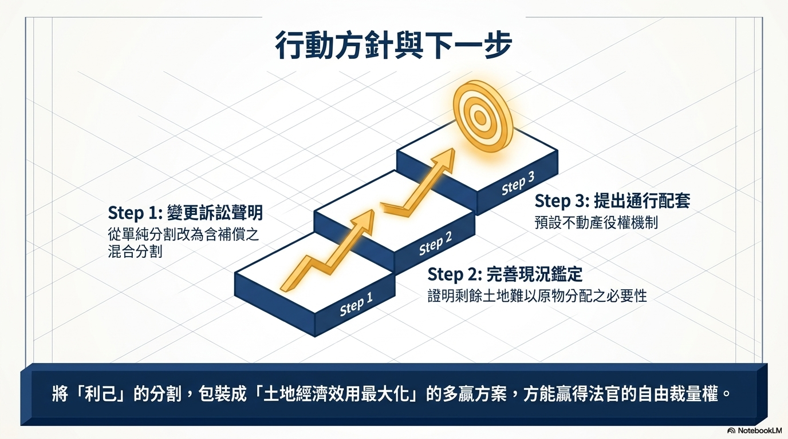
不受當事人主張分割方法之拘束
【法律原則】
法院定共有物之分割方法，固有自由裁量權，不受共有人主張之拘束，但仍應斟酌下列因素公平決定（110 年度台上字第 1630 號、110 年度上字第 1097 號）：
1. 當事人之聲明（意願）
2. 共有物之性質
3. 經濟效用
4. 全體共有人之利益
【實務見解】
• 113 年度上易字第 262 號：
「法院應斟酌當事人意願、共有物之使用情形、共有物之性質、經濟效用及全體共有人利益等情形而為適當之分割，不受共有人主張分割方法之拘束。」
【實務意義】
甲之主張僅供法院參考，最終分割方法由法院依職權裁量決定。
共有物分割法律效力分析 ｜ 謝秉錡律師事務所 第 10 頁／共 20 頁
共有人無通行需求時
【例外見解】
道路維持共有「並非絕對」。若無維持共有之必要，法院無須強制維持共有。
【代表性見解】
• 113 年度重上字第 207 號判決：
「無必要亦無理由再保留……土地作為道路，由兩造共有使兩造共享不動產役權。」
• 本件特殊性（甲案）：
乙、丙二人「無意取得該小路部分」，且該小路係「通往甲所有之房屋」。
乙、丙對該道路並無使用需求。
【反面論證】
強制乙、丙維持共有 → 乙、丙須負擔管理責任與稅費 → 減損經濟效用 → 違反 110 年度台上字第 1630 號「公平決定」原則。
共有物分割法律效力分析 ｜ 謝秉錡律師事務所 第 8 頁／共 20 頁
取得原物者對其他共有人之補償義務
【法條依據】
民法第 824 條第 3 項：「共有人中有未受分配，或不能按其應有部分受分配者，得以金錢補償之。」
【適用情形】
混合分割中，若僅由部分共有人（甲）取得原物（小路），其他共有人（乙、丙）未受原物分配，甲應以金錢補償乙、丙。
【補償數額之計算】
• 甲取得小路之價值 ＞ 甲之應有部分比例 → 甲應補償乙、丙差額
• 補償方式：於分割裁判中一併宣告金錢補償數額
【實務見解】
臺灣高等法院暨所屬法院 112 年法律座談會民事類提案第 5 號：
「由取得原物者補償未取得者，以達成公平適當之結果。」
共有物分割法律效力分析 ｜ 謝秉錡律師事務所 第 11 頁／共 20 頁
變價分割後之潛在爭議
【問題意識】
若甲取得小路（原物分配），其餘土地變價由「第三人」拍定取得。該第三人是否需通行該小路？
若其餘土地無其他通路 → 其餘土地成為「袋地」→ 第三人需對甲之小路主張通行權。
【法院可能之處理方式】
• 方式一：依 112 年度上字第 358 號意旨，要求將小路「維持共有」，以保障潛在買受人（第三人）之權益。
• 方式二：甲於分割時一併「設定不動產役權」予其餘土地（或承諾提供通行權），以解決袋地問題。
【實務建議】
甲應於分割方案中預先規劃：證明其餘土地另有通路，或承諾設定通行權，以減少法院駁回之風險。
共有物分割法律效力分析 ｜ 謝秉錡律師事務所 第 12 頁／共 20 頁
乙、丙無意取得土地時之調整
【事實變更】
由於「道路只有甲在使用」，且「乙、丙二人無意取得土地」，甲希望提出「更彈性之方案」。
【法律議題】
1. 乙、丙「無意取得」之意願，是否足以動搖「道路應維持共有」之原則？
2. 若乙、丙均同意變價分割，法院是否仍受「原物分配顯有困難」要件之拘束？
3. 第三人拍定後之通行權問題，如何預先解決？
【實務新情勢】
共有人意願之尊重（112 年度上字第 358 號）：
「考量兩造意願及公平性」——當部分共有人明確表示無意取得特定部分時，「強制其接受原物分配」反而違反其意願。
共有物分割法律效力分析 ｜ 謝秉錡律師事務所 第 14 頁／共 20 頁
甲之主張在現行實務下之可行性
【可行性評估】
甲之主張在現行實務見解下「具有可行性」，但法院採納與否取決於下列條件：
條件 1：甲依民法第 824 條第 3 項提出「金錢補償方案」，以調節甲取得小路之超額利益。
條件 2：其餘部分確有「原物分配顯有困難」之情事，或乙、丙「均同意變價分割」（113 年度上易字第 106 號）。
條件 3：其餘土地不會因分割而成為袋地；甲願意提供必要之通行權或設定不動產役權。
【結論】
若甲能證明上述三條件均具備，法院依 110 年度台上字第 1630 號、112 年度上字第 358 號所揭示之原則，採用甲之方案之可能性甚高。
共有物分割法律效力分析 ｜ 謝秉錡律師事務所 第 15 頁／共 20 頁
甲應如何修正分割方案
【建議方案】
建議一：將小路部分規劃為「由全體共有人維持共有」（109 年度上易字第 218 號），以符合道路使用目的。
建議二：若堅持取得小路，應一併提出：
(1) 金錢補償乙、丙之具體數額（依民法第 824 條第 3 項）；
(2) 證明其餘土地「原物分配顯有困難」之證據；
(3) 承諾對其餘土地（將來之買受人）提供通行權。
建議三：提出「全體共有人均能獲得原物分配」之替代方案，避免法院依職權改定分割方法。
【重要提醒】
法院不受當事人主張之拘束。上述建議僅在增加法院採納之可能性，最終仍由法院裁量決定。
共有物分割法律效力分析 ｜ 謝秉錡律師事務所 第 16 頁／共 20 頁
本分析引用之實務見解
判決／座談會
見解要旨
對甲方案之影響
105 年法律座談會第 11 號
嚴格解釋（否定說）
❌ 不利
108 年度上字第 1258 號
嚴格解釋；道路應維持共有
❌ 不利
112 年法律座談會第 5 號
彈性解釋（肯定說）✅
✅ 有利
112 年度上字第 358 號
道路維持共有；變價分割從嚴
⚠ 部分不利
113 年度上易字第 262 號
道路維持共有；法院裁量權
⚠ 部分不利
113 年度重上字第 207 號
無通行需求時，無須維持共有
✅ 有利
110 年度台上字第 1630 號
法院裁量不受當事人拘束
⚠ 中性
共有物分割法律效力分析 ｜ 謝秉錡律師事務所 第 17 頁／共 20 頁
民法第 823～825 條摘要
【民法第 823 條】
第 1 項：
各共有人，除法令另有規定外，得隨時請求分割共有物。但因物之使用目的不能分割或契約訂有不分割之期限者，不在此限。
【民法第 824 條第 2 項】
第 2 款：
以原物為分配時，因共有人之利益或其他必要情形，得就共有物之一部分仍維持共有。
第 2 款後段：
「以原物之一部分分配於各共有人，他部分變賣，以價金分配於各共有人。」
【民法第 824 條第 3 項】
共有人中有未受分配，或不能按其應有部分受分配者，得以金錢補償之。
【民法第 824 條第 4 項】
以原物為分配時，因共有人之利益或其他必要情形，得就共有物之一部分仍維持共有。
【「因使用目的不能分割」之例】
• 界牆、界標
• 區分所有建築物之共同部分
• 供通行使用之道路（通常情形）
• 管線、排水設施
共有物分割法律效力分析 ｜ 謝秉錡律師事務所 第 18 頁／共 20 頁
1. 「部分原物、部分變價」之混合分割，現行實務（112 年座談會乙說）已採「肯定說」，並不違法。
2. 供通行使用之道路，原則上應維持共有；例外：共有人均無通行需求時，無強制維持共有之必要。
3. 變價分割須具備「原物分配顯有困難」要件；甲應舉證證明之。
4. 甲之方案若附帶「金錢補償」及「通行權承諾」，獲法院採納之可能性較高。
承辦律師：謝秉錡律師事務所 ｜ 本簡報僅供學術研究與實務參考，不作為個案法律意見